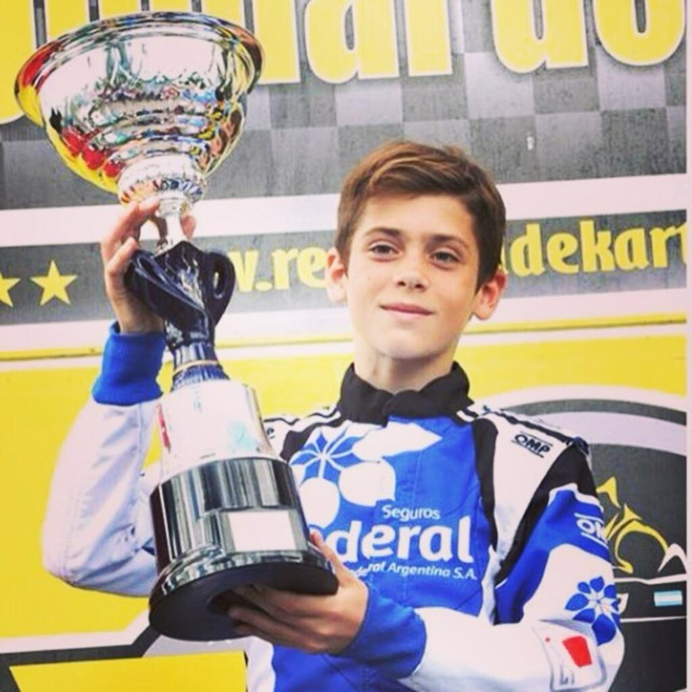

Sus primeros pasos
Franco Alejandro Colapinto nació el 27 de mayo de 2003 en Pilar, provincia de Buenos Aires, Argentina. Desde muy pequeño mostró una gran pasión por los motores y la velocidad. A los 9 años comenzó a competir en karting, donde rápidamente demostró su talento. Sus primeros grandes logros llegaron en 2016 y 2018, cuando consiguió el Campeonato Argentino de Karting. Con apenas 14 años tomó una decisión que cambiaría su vida: viajar a Europa para continuar desarrollando su carrera como piloto. Allí comenzó a competir internacionalmente y a acercarse cada vez más a su gran sueño: llegar a la Fórmula 1.

Más que velocidad, una historia de perseverancia.
Desde un pequeño karting hasta los circuitos más importantes del mundo. Una historia que demuestra que los grandes sueños no tienen fronteras.